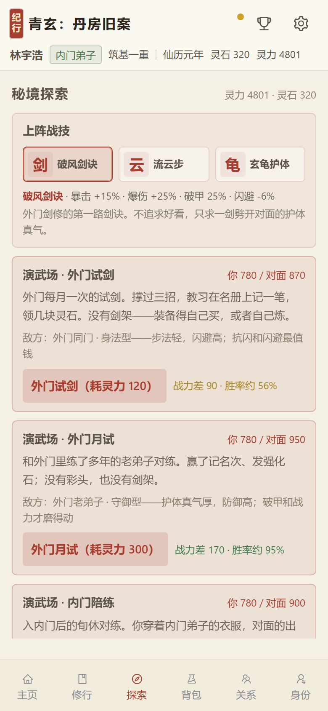
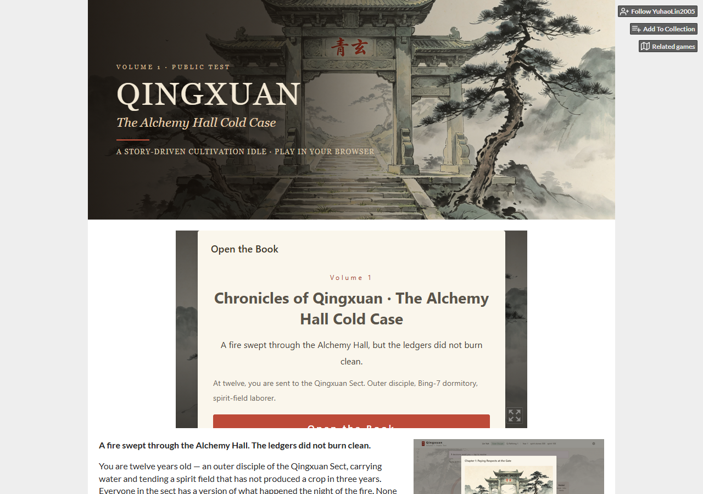

我不是科班做游戏的。我是玩出来的，后来自己动手做了一个。
《青玄纪行 · 丹房旧案》是在 MIT 开源的 vue-idle-xiuxian 上二次开发的放置修仙游戏。上游留的是放置修炼的底子：修炼循环、基础灵草 / 丹药表、几个 worker。当前版本的 12 章故事、演武场与战技、市场 / 身份 / 关系、界面主题、全部场景与人物图（AI 生成，我定风格、筛选、接入）、战力与强化数值，是重做或新增的。上游的 combat.js / dungeon.js 没接入当前版本。
对照上游：src 33 → 66 个文件（37 新增、19 改写、10 原样保留）；public 从 2 个文件到 42 个（新增 40 个，其中场景 / 人物 / 道具图 37 张）。
最初的演武场只有一个战力门槛，够就赢，不够就输。开打前玩家没事可做，打赢是因为修为到位，打输是因为还没练够。
我把它改成三档对手：身法型吃抗闪，守御型吃破甲，强攻型吃卸力。玩家只能上阵一个战技，所以每一档都要先问一句「对面是什么路数」，再决定带谁。三档按剧情节点开，不是一路加难度——内门的对手战力反而比月试低，但爆发最重。
| 战技 | 试剑 · 疾风 870 | 月试 · 铁壁 950 | 内门 · 狂攻 900 |
|---|---|---|---|
| 不带战技 | 25.8% | 15.9% | 0.1% |
| 破风剑诀 | 58.4% | 92.5% | 0.5% |
| 流云步 | 73.8% | 83.2% | 11.4% |
| 玄龟护体 | 63.0% | 35.2% | 41.9% |
10 级裸装、战力 780；每格 1000 个固定种子（seed 20261026），数字是本地跑出来的。界面里的胜率是 120 个种子的快速预估，和这组差 1–3 个百分点。
同一套 780 战力，带对了胜率翻几倍；带错了少则掉一成，内门带破风只剩 0.5%。三档各有一个最优解，换错了就掉回去。
内门不是换一个战技就能过的：最好的玄龟也只有 42%，把 0.1% 抬到 42% 之后，剩下的靠战力。这一档是力量墙。
三套战技只改暴击、闪避、破甲、卸力这些二级修正，不写回战力。12 章的门槛、界面上的战力、玩家的强化投入用的是同一个数，战技一动它，门槛和数字都得跟着重配。所以战技决定「同一套战力能不能打过」，不决定「你该练到多少级」。
三套战技各带一个小代价。破风吃 -6% 闪避；流云吃 -6% 暴击，挨上暴击还要多吃一倍伤害。玄龟原本也想降闪避，但身法型对手本来就靠闪避活，再降一次它在试剑档会直接归零。代价最后放在输出端：暴击 -5%，防御端只靠「超过 8% 最大生命的那一下减 85%」和 8% 减伤。轻飘飘的连击照样磨得进来，只是磨得慢。


这一版是自动推演，加一个「点技能」按钮也只是假的：玩家点与不点，结果早就在开打前定了。所以选择放在开打之前，而不是假装给一个操作。下一步真要做实时战斗，先得决定玩家的手忙到什么程度——轻度 MMO 的底线是挂机不难受，手动要有明确收益。
上线前 7 项验收、21 个探针，8 个结局各走一遍。修过成就页白屏、手机上两个 Tab 点不到、存档负数整档拒收。演武场另有一套校验：每档只能有一个最优解，最佳与次佳至少差 5 个百分点，不带战技必须明显低于对应最佳——证明确实是战技在起作用，不是同一套数值换个名字。
福州城市文旅产品。用户回答 6 道场景题 + 3 段自由写，系统从 19 个真实福州地标里给出 3 条路线；线下 6 个烟台山点位剧情、3 个结局。我负责需求、MVP 取舍、分工和验收。
48 小时里只做「答题 → 路线 → 点位」这条主线；组队、时间胶囊、分享放到第二层。验收清单在开工前就写，不然最后只能靠感觉。比赛没有排名，也没有获奖；政府采购只是商业模式设计，没有签约。
每份都先给判断，再拿公开数据核对；数据推翻判断就改，口径不同的分开写，不拿大盘当自己的基线。
主要看两件事：它在什么局面下会被选，选错要付什么代价。这两件事能写进配置、能在版本里跑出来，我才觉得它是真的；否则只是一个看起来有用的按钮。
所以演武场不是「加一个技能」就完事：战技必须改变某一档的胜率结构，否则就是换皮。写数值时也一样——先问这个数卡住的是谁、卡多久，再决定填多少。
玩过 126 款手游，跨 4 个品类，偏放置、SLG、策略；TapTap 两个账号 3162 / 2257 天（账号注册天数）。《星际猎人》联合体成员（玩家侧），几个赛季跟下来，看过联盟怎么拉人、怎么散。
青玄公开试玩（itch，海外）：yuhaolin2005.itch.io/qingxuan-volume1
国内网络可能打不开；国内演示地址可联系后另发。
GitHub：github.com/YuhaoLin2005
国内网络可能打不开；项目摘要见本页和 PDF。
EvalScope PR #1576：github.com/modelscope/evalscope/pull/1576
已合入主仓。
作品集 PDF 随简历附上。